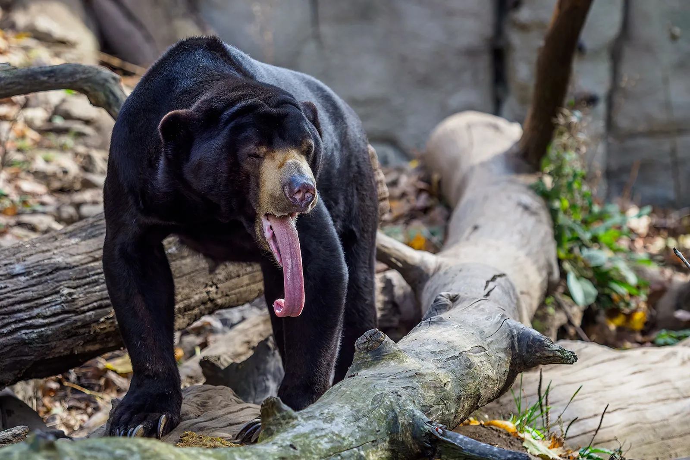
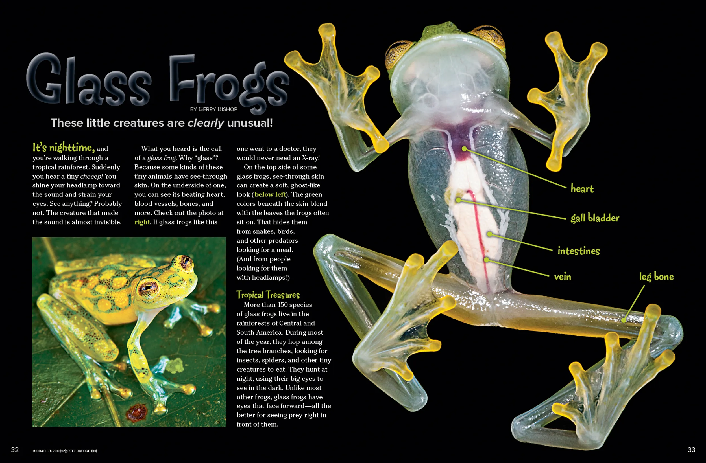
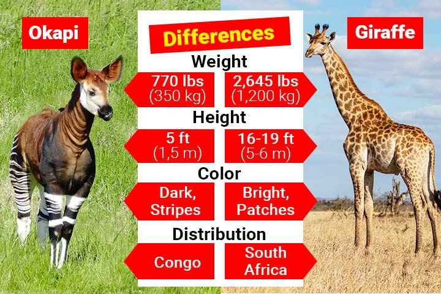

Rare Rainforest Animals
Here are some lesser-known rainforest animals.
- Okapi, The okapi is the only living relative of the giraffe, not a zebra, and possesses a long, prehensile tongue to strip leaves from trees in its dense rainforest home in the Democratic Republic of Congo.
- Glass Frog, A significant fact about glass frogs is their ability to temporarily store red blood cells in their liver to increase their transparency, allowing them to blend into foliage by reducing their visibility to predators.
- Sun Bear, Sun bears are the world's smallest and shiest bear species, characterized by a unique pale, crescent-shaped chest marking. These nocturnal, arboreal bears use their 25cm-long tongues to extract honey and insects, and their long, curved claws to climb trees.


